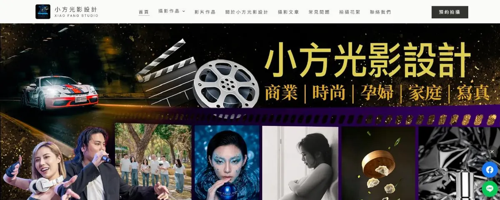
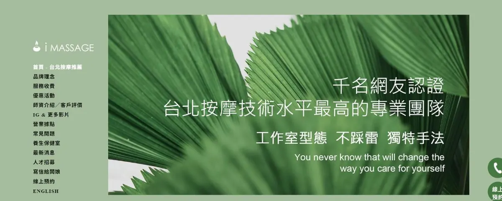
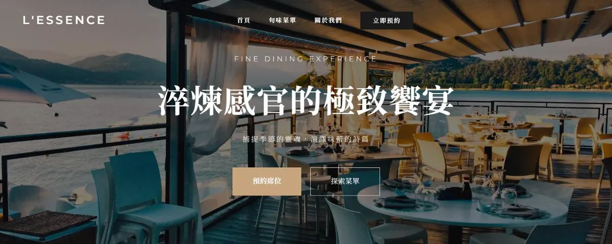
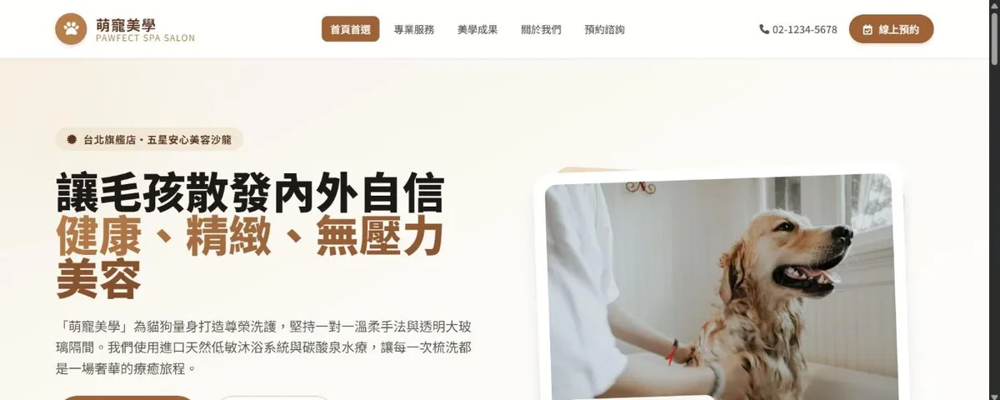
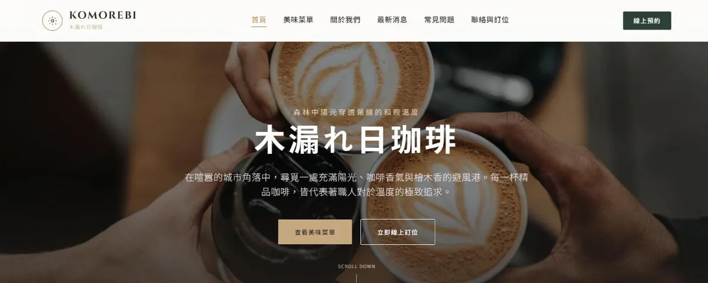
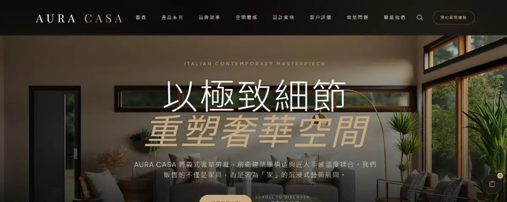
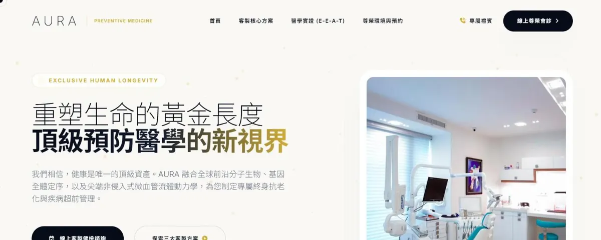

Portfolio / 作品集
品牌網站
設計案例.
✦ 真實交案 為實際客戶的案件；範例網站 為 YC AXIOM 自主設計的示範網站，不是客戶案件，用來展示各產業的設計與功能。

01
品牌網站 · 商業攝影
攝影工作室
✦
真實交案
高雄左營「小方光影設計」官方品牌網站。20年資歷、國際獲獎攝影團隊，涵蓋攝影作品集分類、影片作品、團隊介紹、攝影教學課程與三地工作室資訊。

02
網站維運 · 網站遷移
按摩工作室
✦
真實交案
「iMassage 專業按摩」官網遷移紀實。因應 Weebly 台灣服務終止，將既有網站完整搬遷至 WordPress，保留原有內容與服務資訊，同時換來更高的客製彈性。

09
店家網站 · 精緻餐飲
範例網站
餐廳
法式精緻餐廳 L'ESSENCE 官方品牌網站。融合米其林美學，涵蓋旬味菜單展示、主廚推薦、品牌故事與線上訂位系統。

10
店家網站 · 寵物服務
範例網站
寵物美容
專業犬貓美容 SPA「茸茸」品牌網站。涵蓋服務項目與價目、美容作品集、Before/After 展示與 LINE 線上預約諮詢系統。

14
店家網站 · 日系咖啡
範例網站
Komorebi 木漏れ日珈琲
日系選物咖啡廳多頁式網站。涵蓋線上菜單、品牌故事、選物商品與門市資訊，營造靜謐沉浸的品牌氛圍。

15
品牌網站 · 居家家具
範例網站
AURA CASA 義式家具
義式極簡美學家具品牌網站。以大幅質感攝影與細膩排版，完整呈現產品系列、品牌理念與精品電商體驗。

17
品牌網站 · 預防醫學
範例網站
AURA 預防醫學中心
高端預防醫學中心品牌網站。以沉穩專業的視覺語彙建立信任感，涵蓋服務項目、專業團隊與預約諮詢入口。